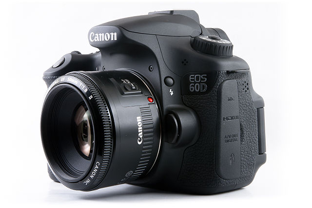
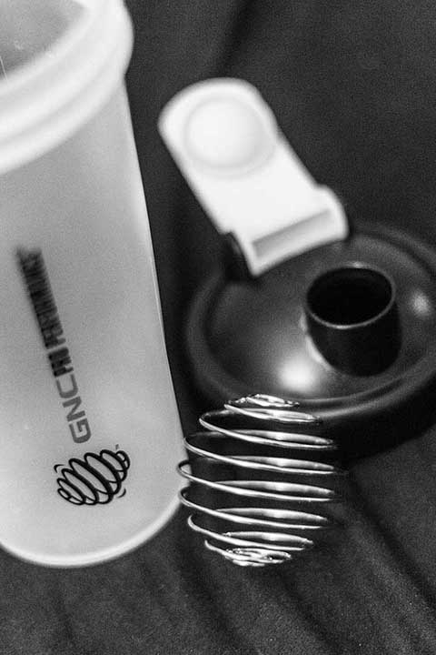

Why I will be loyal to the Canon 60D - a UX Perspective
5th Mar '13
I've been thinking about why I like my 60D so much. And it's not just because it is my first (and to date, only) DSLR camera. Granted, I bought it only after almost obsessive research and review. But here's my summary of the reasons why I will always remain faithful to its line of cameras:
Read More...

It was built for my hand
Unlike other top end DSLRs, the 60D offers a good compromise between size, weight and portability. What's more, it fits perfectly into my rather small hand. It was as though designed for my hand! And the grip ensures that I don't drop it even if I carry it callously in one hand.
The controls
I've seen button crazy cameras which seem as though someone with agnosia designed them. But the 60D has all the important buttons accessible by the right hand. Take a look at what's on the left side - The 'DELETE' button, power switch and mode dial; in short, buttons which you would press only deliberately and to do some rather important tasks outside of shooting.
This was the first camera to have the mode dial lock. Some people feel it is redundant, but I guess they never shot in a jungle while swinging around.
The swivel screen
Trust me, it's not just an accessory - it actually helps take evocative photos from different angles, like the one below -
And I actually shoot 90% of the time with the swivel screen closed. For all normal shooting, nothing beats the viewfinder.
And that's why I will always stick to the 60D lineup.
Close
The Joys of a Nice Shake - Delivering on Promise and Overdelivering
28th Feb '13
While the world goes berserk on the harlem shake, I've been relishing cool milkshakes
Read More...
I have had this GNC shaker lying around for almost 6 months now and I hadn't even bothered to unpack it. After all, I got it for free. But a few days ago, I bought my first batch of protein powder (yeah, the singular object of admiration of fitness junkies). I mixed the powder with the milk but it just wouldn't blend. So I remembered the shaker and decided to give it a try.

The shaker comes in with a whisk and instructions on how to use it - pretty gimmicky for a petty shaker I thought. The page with the instructions also claimed how the 'patented whisk' can mix just about anything perfectly. Onto the actual shake. What came out after 20 seconds or so of shaking was a yummy thick drink that I could have never got with a spoon. I was an instant fan! I've had a few more rich frothy drinks after that and I am thoroughly enjoying it. I guess not all free things of life are cheap.
Close
Even Adobe Has Its Vice
13th Feb '13
As robust and reliable as Adobe's products are, they don't prevent screw ups. And a screw up for the product means a miffed user.
Read More...
Just a few days ago, I was filling out a PDF form. Just one step left to do - sign it digitally. OK, I don't have a digital signature. Adobe reader asks me to create one. No problems so far. I create a new key to store my digital signature and fill in the password. Simple, right? Wrong!
Passwords do not match. Of course they don't, and it's my fault that there is no field to re-enter the password. I did create the key eventually by opting for a different option to create the key. But a humble reminder to Adobe - please don't persecute me for your mistake.